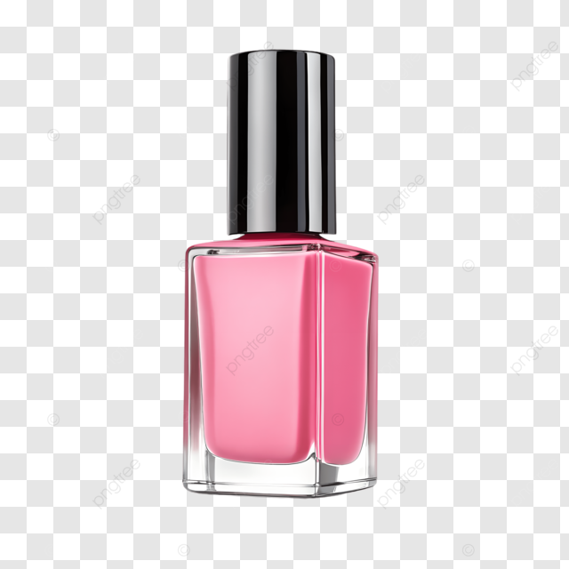

PNG Nail Art
This page shows an example of a PNG image using nail art.

I chose this image because I thought the pink bottle looked cute and the image was a good example to use for a PNG.
PNG is an image file type that keeps good image quality and can have a transparent background.
Source:Image Source